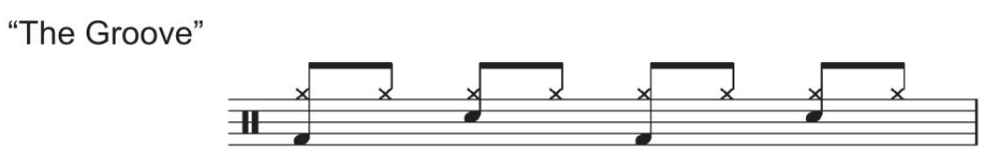
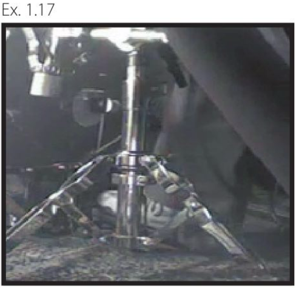
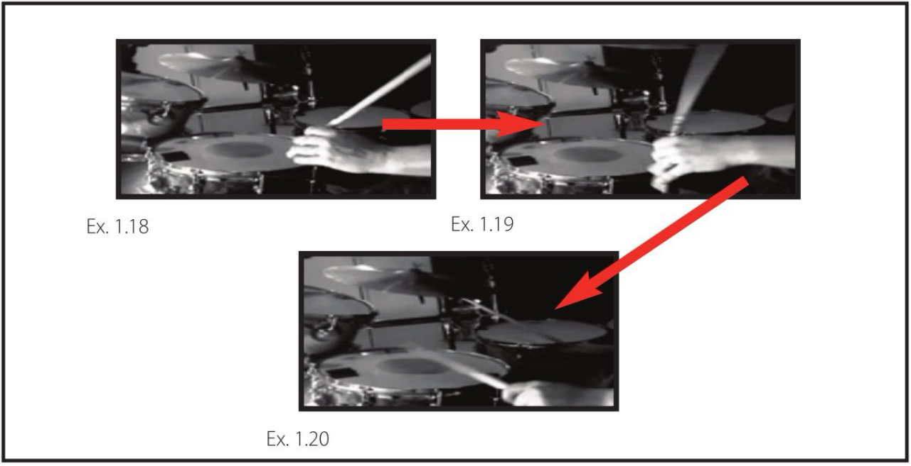
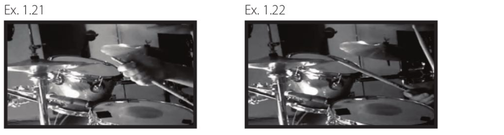

PERFORMANCE 1 第一單元 · 第二章
就像樂譜有特定的 groove、樂句長度與 chord progression，也會有相應的演奏方式與鼓組音色。光把節奏型打對還不夠，還必須以正確的音色與 feel 演奏。因此，我們會拆解這個 groove，說明 hi-hat、小鼓與大鼓各自適合的 articulations。
Ex. 1.16
這份樂譜以單手在 hi-hat 上演奏緊實且一致的八分音符 groove，搭配強而有力的大鼓與小鼓 backbeat；這種演奏方式已出現在數以千計的錄音作品中。雖然技巧上不難，要讓這個 groove 的 feel 和聲音都好，卻相當不容易。你必須特別留意，確保四肢的落點彼此對齊。因此，每當小鼓或大鼓與 hi-hat 落在同一個時間點時，都應該完全同時發聲，不能出現「flams」。
音色
現在你已了解基本的演奏方式，接下來我們會更詳細地看看，如何做到這些 articulations。
大鼓
大鼓的節奏型要打得非常有力，展現氣勢與衝擊力。這可以透過三個重要策略來達成，分別是：
Ex. 1.17
1. 使用 bass drum beater 的塑膠面，或表面堅硬的 bass drum beater
許多搖滾與流行音樂鼓手會這樣選擇，因為這能讓每次踩踏的衝擊帶出清晰的力道與 attack，而不是溫暖的「emmooph」聲。要讓大鼓聲穿透強烈的人聲、失真吉他與強勁的 bass cabinets 聲音，這是非常合適的選擇。
2. Burying the bass drum beater into the bass drum head
每次敲擊後，讓 bass drum beater 持續壓住鼓皮也非常重要。這不僅會稍微抑制鼓的共鳴，配合表面堅硬的 bass drum beater，也能讓敲擊瞬間多一層 attack。不過，你必須確實把 bass drum beater 壓緊在鼓皮上，避免它與鼓皮之間產生不必要的雜振聲。
PERFORMANCE 1 第一單元 · 第二章
小鼓
小鼓每一下都應該打得非常一致，聲音清脆、有穿透力。此外，每一下小鼓都應該使用 rimshot，也就是在完全相同的時間點，擊中鼓皮中央與鼓框。
大多數鼓手以為，rimshot 要靠像原始人那樣大幅揮動手臂來演奏。這種想法與事實相去甚遠。實際上，由手腕帶動起始動作，再由手指完成敲擊，才能讓 rimshot 最響亮、最有效。以下分成兩個步驟來看：
- 瞄準小鼓鼓皮中央，以手腕啟動敲擊動作（Ex. 1.18）。
- 接著，在即將擊中鼓框與鼓皮中央之前，用後面三根手指握緊鼓棒。這會讓原本就有力的敲擊多出清脆的 attack，動作很像空手道的手刀！見Ex. 1.18–1.20。
Ex. 1.18–1.20
Hi-Hat
這個八分音符節奏型應該打得平均，音量中等偏大。要達到這樣的聲音，請使用鼓棒的 shoulder，也就是緊接在棒頭下方的部位（Ex. 1.18）。接著，用這個部位敲擊 hi-hat 鈸片的邊緣，而非上表面（Ex. 1.19）。這樣能得到厚實、同時又能控制強弱的 hi-hat 音色。相較之下，降低 hi-hat 的音量也會產生 dynamic illusion，讓大鼓與小鼓在整體鼓組聲音中，自然聽起來更大聲。
重要：不要用棒頭敲擊 hi-hat 的上表面。這樣聽起來可能會很俗氣，像鼓機一樣！
Ex. 1.21–1.22
PERFORMANCE 1 第一單元 · 第二章
合在一起演奏
最後呈現的效果，是強勁、充滿衝擊力且氣勢十足的大鼓聲，搭配像空手道手刀般的 rimshot，以及厚實但控制得宜的 hi-hat。這樣的演奏方式，能與歌曲中的 arpeggiated guitar patterns，以及以節奏推動的 bass textures 完美搭配。
最後，回到樂譜本身
經過前面的說明，你現在已經知道每個段落都是八小節。這表示你不必一直盯著樂譜，也不需要逐一閱讀每個表示持續演奏既定 groove 的斜線記號與反覆記號。你應該能夠每隔四、五小節，輕鬆地看一眼樂譜，確認目前演奏到哪裡。這不僅能幫助你專注於前幾頁所說的「正確音色」，也能讓你把注意力放在自己的 time groove 上。享受演奏吧！